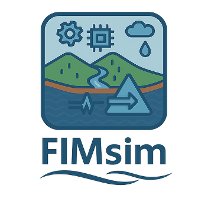

Part 1
Preparing Input Parameters
Use these modules to create reusable spatial and hydrologic inputs before selecting a flood mapping model.
- DEM
- LULC & Manning's n
- Flowline
- Streamflow Data

FIMsim User ManualFlood Inundation Model Simulation Tool
FIMsim is organized into two parts. The first part prepares input parameters: DEM, LULC and Manning's n, Flowline, and Streamflow Data. The second part prepares flood mapping model inputs, starting with LISFLOOD-FP and TRITON.
Part 1
Use these modules to create reusable spatial and hydrologic inputs before selecting a flood mapping model.
Part 2
Use these model modules to assemble model-specific files from the prepared inputs.
Download and process Digital Elevation Models for any Area of Interest.
Output: DEM raster (.tif / .asc / .gpkg).
Download land use/land cover data and assign Manning's n roughness coefficients.
Output: LULC raster and Manning's n raster / table.
Download NHD river flowlines, identify the main river, save USGS gages, and export NWM feature IDs.
Output: flowlines, gages CSV, feature IDs CSV.
Download discharge time series from NOAA NWM retrospective, NOAA NWM forecast, or USGS stream gages.
Output: CSV files with time_hours and discharge_cms.
Install Anaconda first. Then open Terminal on Mac or Anaconda Prompt on Windows and run these commands one by one:
git clone https://github.com/pnikrou/FIMsim.git
cd FIMsim
conda env create -f environment.yml
conda activate FIMsim
python main.pyThe first-time setup usually takes around 10 minutes because it needs to download the required packages. After that, open the app again with:
cd FIMsim
conda activate FIMsim
python main.pyDEM Mode downloads and processes Digital Elevation Models for one or more Areas of Interest using USGS 3DEP data, including hydro-conditioned DEMs used for HAND-based flood inundation mapping.
Every session starts with a project. The project folder stores all downloaded files and settings.
An AOI is a polygon shapefile (.shp) or GeoPackage (.gpkg) that defines the study boundary.
For each AOI, choose the DEM source and output format.
| 1 | Source | 3DEP: USGS 3D Elevation Program. HAND DEMs. |
|---|---|---|
| 2 | Cell size | Output raster cell size in meters. Default is 10 m. Match this to your flood model's required resolution. |
| 3 | Output format | GeoTIFF (.tif), GeoPackage (.gpkg), ASCII Grid (.asc). |
For multiple AOIs, each AOI gets its own settings card. Use Apply current AOI's settings to all to copy settings across all AOIs at once.
<project>/<AOI name>/dem/dem.tif, or .asc / .gpkg depending on your format choice.LULC Mode downloads land use / land cover data and derives Manning's n hydraulic roughness coefficients for each AOI.
Follow the same steps as DEM Mode. The project and AOI setup are identical.
Choose how Manning's n is assigned across the AOI.
| Fixed (Uniform) | A single Manning's n value is applied uniformly across the entire AOI. Use this for simple simulations or when land cover variability is not critical. No LULC download is required. |
|---|---|
| Varying (Per LULC class) | LULC data is downloaded and each land cover class is assigned its own Manning's n value. |
In Varying mode, a table lists all LULC classes with default Manning's n values.
<project>/<AOI name>/lulc.tif and <AOI name>/lulc.ascii if requested.Flowline Mode downloads and processes river network data for one or more Areas of Interest using NHD flowlines. It can save the main river, all flowlines clipped to the AOI, nearby USGS gages, and NWM feature IDs.
Follow the same project and AOI setup steps as DEM Mode. After AOIs are confirmed, each AOI gets its own flowline settings card.
For each AOI, choose which flowline products to save and which format to use.
| Option | Description | Available formats / notes |
|---|---|---|
| Main river | Saves the highest-stream-order NHD river reach identified inside the AOI. | Shapefile (.shp), GeoPackage (.gpkg), TIF raster (.tif), or CSV (.csv). Selected by default. |
| All flowlines | Saves the full NHD reach set clipped to the AOI. | Shapefile, GeoPackage, TIF raster, or CSV. Optional. |
| Cell size for TIF | Controls raster cell size when either Main river or All flowlines is saved as a TIF. | Default is 30 m. Use the same or similar resolution as the hydraulic model grid when possible. |
| USGS gages CSV | Saves a CSV of USGS stream gages found for the AOI. | Selected by default. The gage IDs can be used later in Streamflow Data Mode. |
| Feature IDs CSV | Saves NWM feature IDs from the downloaded NHD flowlines. | Saved automatically. These IDs can be used for NWM retrospective or forecast streamflow downloads. |
<project>/<AOI name>/.| Output | Typical filename | Purpose |
|---|---|---|
| Main river | main_river_<AOI name>.* | Main NHD river reach selected for the AOI. |
| All flowlines | all_flowlines_<AOI name>.* | All NHD flowlines clipped to the AOI. |
| USGS gages | usgs_gages_<AOI name>.csv | Station number, station name, latitude, and longitude for USGS gages. |
| NWM feature IDs | feature_ids_<AOI name>.csv | Feature IDs / COMIDs used by NWM streamflow downloads. |
Streamflow Data Mode downloads discharge time series without requiring an AOI. Enter NWM feature IDs or USGS gage numbers directly, paste comma-separated values, or browse to a CSV/TXT file with one ID per line.
Start by creating or opening a project. Streamflow CSV outputs are saved directly in the project folder.
Enable one or more streamflow sources. Each enabled source has its own ID field, date range, and interval settings.
| Source | Required ID | Date coverage | Interval |
|---|---|---|---|
| NWM Retrospective | NWM feature ID / COMID | 1979-02-01 to 2020-12-31. USA only. | 0.5h, 1h, 3h, 6h, 12h, or 24h. Default is 1h. |
| NWM Forecast | NWM feature ID / COMID | Rolling forecast window, about 10 days from the current date. USA only. No historical archive. | Forecast output is saved at 1-hour interval. |
| USGS Stream Gage | USGS gage number | Depends on gage availability and requested period. | 15min, 30min, 1h, 3h, 6h, 12h, or 24h. Default is 1h. |
| Source | Filename pattern | CSV columns |
|---|---|---|
| NWM Retrospective | nwm_retro_<feature_id>.csv | time_hours, discharge_cms |
| NWM Forecast | nwm_forecast_<feature_id>.csv | time_hours, discharge_cms |
| USGS Stream Gage | usgs_discharge_<gage_id>.csv | time_hours, discharge_cms |
The primary model-ready discharge field is discharge_cms,
which stores discharge in cubic meters per second. The
time_hours column represents elapsed hours from the first
timestamp and is useful for hydraulic model boundary inputs.